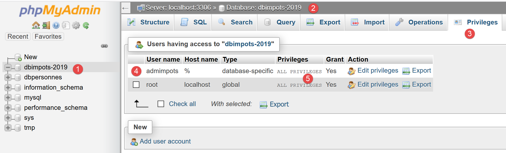
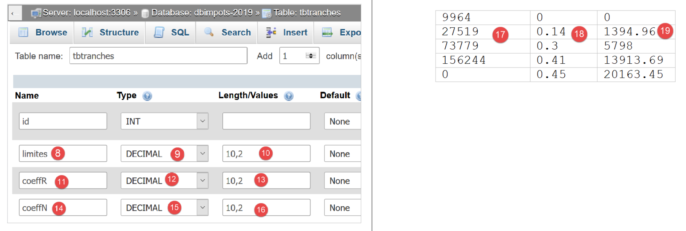
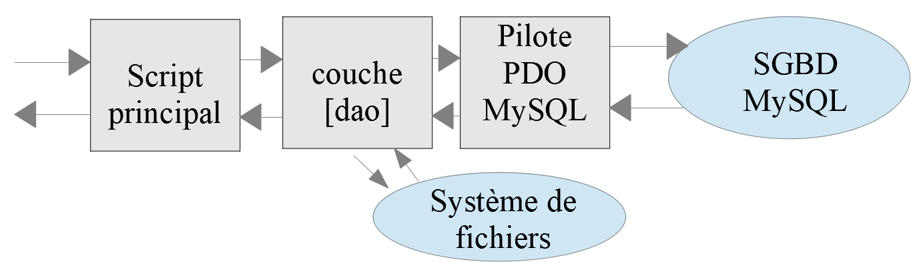
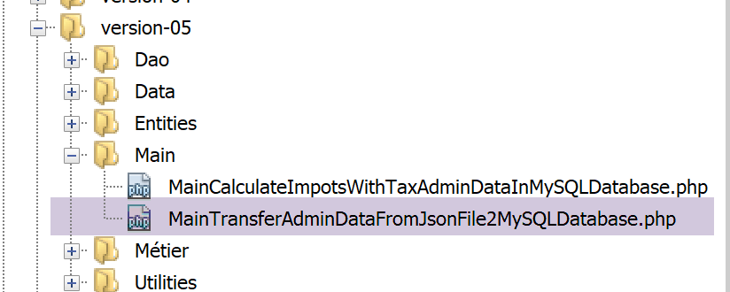
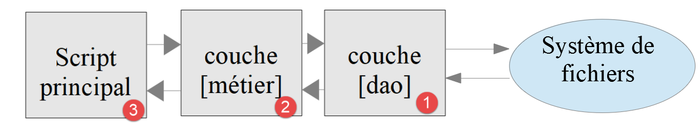
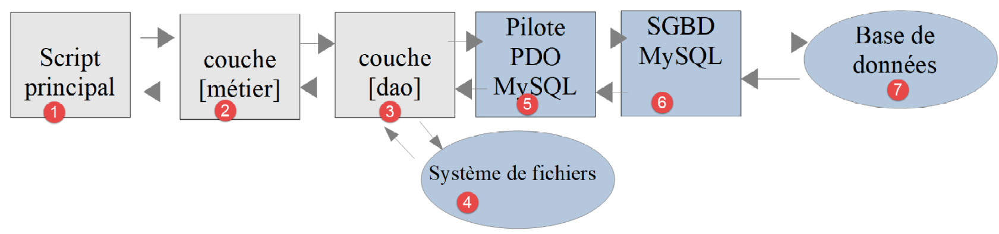
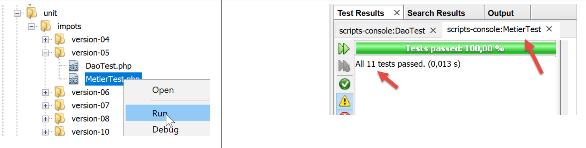

13. Exercício prático – versão 5

Já escrevemos várias versões deste exercício. A última versão utilizava uma arquitetura em camadas:

A camada [dao] implementa uma interface [InterfaceDao]. Criámos uma classe que implementa esta interface:
- [DaoImpotsWithTaxAdminDataInJsonFile], que iria buscar os dados fiscais a um ficheiro jSON;
Vamos implementar a interface [InterfaceDao] através de uma nova classe [DaoImpotsWithTaxAdminDataInDatabase], que irá buscar os dados da administração fiscal numa base de dados MySQL.
13.1. Criação da base de dados [dbimpots-2019]
Seguindo o exemplo do parágrafo com o link, criamos uma base de dados MySQL denominada [dbimpots-2019], cujo proprietário será [admimpots] com a palavra-passe [mdpimpots]:

- no [1-4] acima, vemos a base de dados [dbimpots-2019] que, por enquanto, não tem tabelas;

- no [1-5] acima, vemos que o utilizador [admimpots] tem todos os direitos sobre a base de dados [dbimpots-2019]. O que não vemos aqui é que este utilizador tem a palavra-passe [admimpots];
Vamos agora criar a tabela [tbtranches], que conterá os escalões de tributação:

- em [1-7], criamos uma tabela denominada [tbtranches] com 4 colunas;

- em [3-6], definimos uma coluna denominada [id] (3), do tipo inteiro [int] (4), que será a chave primária [6] da tabela e será autoincrementada [5] pelo SGBD. Isto significa que o MySQL irá gerir por si próprio os valores da chave primária no momento das inserções. Atribuirá o valor 1 à chave primária da primeira inserção, depois 2 à seguinte, etc.;
- no [7], o assistente sugere-nos outras opções de configuração da chave primária. Aqui, limitamo-nos a aceitar os valores predefinidos no [7];

- em [8-16], definem-se as outras três colunas da tabela:
- [limites] (8), do tipo número decimal (9) com 10 algarismos, dos quais 2 decimais (10), conterá os elementos da coluna 17 das faixas de imposto;
- [coeffR] (11), do tipo número decimal (12) com 6 algarismos, dos quais 2 decimais (13), conterá os elementos da coluna 18 das faixas de imposto;
- [coeffN] (14), do tipo número decimal (15) com 10 dígitos, dos quais 2 decimais (16), conterá os elementos da coluna 19 das faixas de imposto;
Após validar esta estrutura, obtemos o seguinte resultado:

- em [5], o ícone da chave indica que a coluna [id] é a chave primária. Vemos também que esta chave primária tem valores inteiros (6) e que é gerida (autoincrementada) por MySQL;
Da mesma forma que criámos a tabela [tbtranches], criamos a tabela [tbconstantes], que conterá as constantes do cálculo do imposto:

É possível exportar a estrutura da base de dados para um ficheiro de texto sob a forma de uma sequência de comandos SQL:

A opção [5] exporta aqui apenas a estrutura da base de dados e não o seu conteúdo. No nosso caso, a base de dados ainda não tem conteúdo.


A opção [11] gera o seguinte ficheiro SQL [dbimpots-2019.sql]:
-- phpMyAdmin SQL Dump
-- versão 4.8.5
-- https://www.phpmyadmin.net/
--
-- Host: localhost:3306
-- Hora de geração: 30 de junho de 2019 às 01:10 PM
-- Versão do servidor: 5.7.24
-- PHP Versão: 7.2.11
SET SQL_MODE = "NO_AUTO_VALUE_ON_ZERO";
SET AUTOCOMMIT = 0;
START TRANSACTION;
SET time_zone = "+00:00";
/*!40101 SET @OLD_CHARACTER_SET_CLIENT=@@CHARACTER_SET_CLIENT */;
/*!40101 SET @OLD_CHARACTER_SET_RESULTS=@@CHARACTER_SET_RESULTS */;
/*!40101 SET @OLD_COLLATION_CONNECTION=@@COLLATION_CONNECTION */;
/*!40101 SET NAMES utf8mb4 */;
--
-- Base de dados: `dbimpots-2019`
--
CREATE DATABASE IF NOT EXISTS `dbimpots-2019` DEFAULT CHARACTER SET utf8 COLLATE utf8_general_ci;
USE `dbimpots-2019`;
-- --------------------------------------------------------
--
-- Estrutura da tabela `tbconstantes`
--
DROP TABLE IF EXISTS `tbconstantes`;
CREATE TABLE `tbconstantes` (
`id` int(11) NOT NULL,
`plafondQfDemiPart` decimal(10,2) NOT NULL,
`plafondRevenusCelibatairePourReduction` decimal(10,2) NOT NULL,
`plafondRevenusCouplePourReduction` decimal(10,2) NOT NULL,
`valeurReducDemiPart` decimal(10,2) NOT NULL,
`plafondDecoteCelibataire` decimal(10,2) NOT NULL,
`plafondDecoteCouple` decimal(10,2) NOT NULL,
`plafondImpotCelibatairePourDecote` decimal(10,2) NOT NULL,
`plafondImpotCouplePourDecote` decimal(10,2) NOT NULL,
`abattementDixPourcentMax` decimal(10,2) NOT NULL,
`abattementDixPourcentMin` decimal(10,2) NOT NULL
) ENGINE=InnoDB DEFAULT CHARSET=utf8;
-- --------------------------------------------------------
--
-- Estrutura da tabela `tbtranches`
--
DROP TABLE IF EXISTS `tbtranches`;
CREATE TABLE `tbtranches` (
`id` int(11) NOT NULL,
`limites` decimal(10,2) NOT NULL,
`coeffR` decimal(10,2) NOT NULL,
`coeffN` decimal(10,2) NOT NULL
) ENGINE=InnoDB DEFAULT CHARSET=utf8;
--
-- Índices das tabelas exportadas
--
--
-- Índices da tabela `tbconstantes`
--
ALTER TABLE `tbconstantes`
ADD PRIMARY KEY (`id`);
--
-- Índices da tabela `tbtranches`
--
ALTER TABLE `tbtranches`
ADD PRIMARY KEY (`id`);
--
-- AUTO_INCREMENT para as tabelas exportadas
--
--
-- AUTO_INCREMENT para a tabela `tbconstantes`
--
ALTER TABLE `tbconstantes`
MODIFY `id` int(11) NOT NULL AUTO_INCREMENT;
--
-- AUTO_INCREMENT para a tabela `tbtranches`
--
ALTER TABLE `tbtranches`
MODIFY `id` int(11) NOT NULL AUTO_INCREMENT;
COMMIT;
/*!40101 SET CHARACTER_SET_CLIENT=@OLD_CHARACTER_SET_CLIENT */;
/*!40101 SET CHARACTER_SET_RESULTS=@OLD_CHARACTER_SET_RESULTS */;
/*!40101 SET COLLATION_CONNECTION=@OLD_COLLATION_CONNECTION */;
Pode utilizar este ficheiro SQL para regenerar a base de dados [dbimpots-2019], caso esta tenha sido destruída ou alterada. Não é necessário eliminar a base de dados antes de a regenerar, uma vez que o script SQL encarrega-se de o fazer:


13.2. Organização do código
Para ilustrar melhor o papel dos diferentes scripts PHP que estamos a escrever, vamos organizar o nosso código em pastas:

- em [1], visão geral da versão 05;
- em [2], as entidades da aplicação, entidades trocadas entre camadas;
- em [3], os utilitários da aplicação;
- em [4], os dados utilizados ou produzidos pela aplicação. Decidimos aqui utilizar apenas ficheiros jSON para os ficheiros de texto. Estes apresentam várias vantagens:
- são reconhecidos por muitas ferramentas;
- estas ferramentas dispõem de colorização sintática. Além disso, a notação jSON segue regras específicas. Quando estas não são respeitadas, as ferramentas sinalizam o erro. Por exemplo, um erro difícil de detetar num ficheiro de texto básico é a utilização de letras O maiúsculas/minúsculas em vez de zeros. Se este erro ocorrer, será assinalado. De facto, no código jSON:
"plafondRevenusCouplePourReduction": 42O74
onde, inadvertidamente, foi colocada uma letra «O» maiúscula em vez do zero em [42074], o NetBeans assinala o erro:

De facto, o NetBeans reconhece o O maiúsculo, o que transforma [49O74] numa cadeia de caracteres. Conclui, assim, que a sintaxe deveria ser [4-5]: a cadeia [47O74] deveria estar entre aspas. A atenção do programador é, assim, chamada para o erro e este pode corrigi-lo: quer colocando as aspas, quer substituindo o «O» por um zero;
Os restantes elementos da versão 05 são os seguintes:

- em [6], as interfaces e classes da camada [Dao];
- em [7], as interfaces e classes da camada [métier];
- em [8], os scripts principais da versão 05;
A versão 05 tem dois objetivos distintos:
- preencher a base de dados MySQL [dbimpots-2019] com o conteúdo do ficheiro jSON [Data/txadmindata.json];
- implementar o cálculo do imposto com dados fiscais que passam a provir da base de dados MySQL [dbimpots-2019];
Vamos abordar estes dois objetivos separadamente.
13.3. Preenchimento da base de dados [dbimpots-2019]
13.3.1. Objetivo
O ficheiro de texto taxadmindata.json contém os dados da administração fiscal:
{
"limites": [
9964,
27519,
73779,
156244,
0
],
"coeffR": [
0,
0.14,
0.3,
0.41,
0.45
],
"coeffN": [
0,
1394.96,
5798,
13913.69,
20163.45
],
"plafondQfDemiPart": 1551,
"plafondRevenusCelibatairePourReduction": 21037,
"plafondRevenusCouplePourReduction": 42074,
"valeurReducDemiPart": 3797,
"plafondDecoteCelibataire": 1196,
"plafondDecoteCouple": 1970,
"plafondImpotCouplePourDecote": 2627,
"plafondImpotCelibatairePourDecote": 1595,
"abattementDixPourcentMax": 12502,
"abattementDixPourcentMin": 437
}
O nosso objetivo é transferir estes dados para a base de dados MySQL [dbimpots-2019] criada anteriormente.
13.3.2. As entidades

A entidade [Database] servirá para encapsular os dados do seguinte ficheiro jSON [database.json]:
{
"dsn": "mysql:host=localhost;dbname=dbimpots-2019",
"id": "admimpots",
"pwd": "mdpimpots",
"tableTranches": "tbtranches",
"colLimites": "limites",
"colCoeffR": "coeffr",
"colCoeffN": "coeffn",
"tableConstantes": "tbconstantes",
"colPlafondQfDemiPart": "plafondQfDemiPart",
"colPlafondRevenusCelibatairePourReduction": "plafondRevenusCelibatairePourReduction",
"colPlafondRevenusCouplePourReduction": "plafondRevenusCouplePourReduction",
"colValeurReducDemiPart": "valeurReducDemiPart",
"colPlafondDecoteCelibataire": "plafondDecoteCelibataire",
"colPlafondDecoteCouple": "plafondDecoteCouple",
"colPlafondImpotCelibatairePourDecote": "plafondImpotCelibatairePourDecote",
"colPlafondImpotCouplePourDecote": "plafondImpotCouplePourDecote",
"colAbattementDixPourcentMax": "abattementDixPourcentMax",
"colAbattementDixPourcentMin": "abattementDixPourcentMin"
}
A entidade [TaxAdminData] servirá para encapsular os dados do ficheiro jSON [taxadmindata.json] seguinte:
{
"limites": [
9964,
27519,
73779,
156244,
0
],
"coeffR": [
0,
0.14,
0.3,
0.41,
0.45
],
"coeffN": [
0,
1394.96,
5798,
13913.69,
20163.45
],
"plafondQfDemiPart": 1551,
"plafondRevenusCelibatairePourReduction": 21037,
"plafondRevenusCouplePourReduction": 42074,
"valeurReducDemiPart": 3797,
"plafondDecoteCelibataire": 1196,
"plafondDecoteCouple": 1970,
"plafondImpotCouplePourDecote": 2627,
"plafondImpotCelibatairePourDecote": 1595,
"abattementDixPourcentMax": 12502,
"abattementDixPourcentMin": 437
}
A entidade [TaxPayerData] servirá para encapsular os dados do ficheiro jSON [taxpayerdata.json] seguinte:
[
{
"marié": "oui",
"enfants": 2,
"salaire": 55555
},
{
"marié": "ouix",
"enfants": "2x",
"salaire": "55555x"
},
{
"marié": "oui",
"enfants": "2",
"salaire": 50000
},
{
"marié": "oui",
"enfants": 3,
"salaire": 50000
},
{
"marié": "non",
"enfants": 2,
"salaire": 100000
},
{
"marié": "non",
"enfants": 3,
"salaire": 100000
},
{
"marié": "oui",
"enfants": 3,
"salaire": 100000
},
{
"marié": "oui",
"enfants": 5,
"salaire": 100000
},
{
"marié": "non",
"enfants": 0,
"salaire": 100000
},
{
"marié": "oui",
"enfants": 2,
"salaire": 30000
},
{
"marié": "non",
"enfants": 0,
"salaire": 200000
},
{
"marié": "oui",
"enfants": 3,
"salaire": 20000
}
]
13.3.2.1. A classe base [BaseEntity]
Para simplificar o código das entidades, adotaremos a seguinte regra: os atributos de uma entidade têm os mesmos nomes que os atributos do ficheiro jSON que a entidade deve encapsular. De acordo com esta regra, as entidades [Database, TaxAdminData, TaxPayerData] têm pontos em comum que podem ser fatorizados numa classe pai. Será a seguinte classe [BaseEntity]:
<?php
namespace Application;
class BaseEntity {
// atributo
protected $arrayOfAttributes;
// inicialização a partir de um ficheiro jSON
public function setFromJsonFile(string $jsonFilename) {
// recupera-se o conteúdo do ficheiro de dados fiscais
$fileContents = \file_get_contents($jsonFilename);
$erreur = FALSE;
// erro?
if (!$fileContents) {
// regista-se o erro
$erreur = TRUE;
$message = "Le fichier des données [$jsonFilename] n'existe pas";
}
if (!$erreur) {
// recupera-se o código jSON do ficheiro de configuração numa tabela associativa
$this->arrayOfAttributes = \json_decode($fileContents, true);
// erro?
if ($this->arrayOfAttributes === FALSE) {
// regista-se o erro
$erreur = TRUE;
$message = "Le fichier de données jSON [$jsonFilename] n'a pu être exploité correctement";
}
}
// erro?
if ($erreur) {
// lança-se uma exceção
throw new ExceptionImpots($message);
}
// inicialização dos atributos da classe
foreach ($this->arrayOfAttributes as $key => $value) {
$this->$key = $value;
}
// retorna-se o objeto
return $this;
}
public function checkForAllAttributes() {
// verifica-se se todas as chaves foram inicializadas
foreach (\array_keys($this->arrayOfAttributes) as $key) {
if ($key !== "arrayOfAttributes" && !isset($this->$key)) {
throw new ExceptionImpots("L'attribut [$key] de la classe "
. get_class($this) . " n'a pas été initialisé");
}
}
}
public function setFromArrayOfAttributes(array $arrayOfAttributes) {
// inicializam-se alguns atributos da classe
foreach ($arrayOfAttributes as $key => $value) {
$this->$key = $value;
}
// retorna-se o objeto
return $this;
}
// toString
public function __toString() {
// atributos do objeto
$arrayOfAttributes = \get_object_vars($this);
// remove-se o atributo da classe pai
unset($arrayOfAttributes["arrayOfAttributes"]);
// cadeia JSON do objeto
return \json_encode($arrayOfAttributes, JSON_UNESCAPED_UNICODE);
}
// getter
public function getArrayOfAttributes() {
return $this->arrayOfAttributes;
}
}
Comentários
- linha 5: a classe [BaseEntity] destina-se a ser estendida pelas classes [Database, TaxAdminData, TaxPayerData];
- linha 7: o atributo [$arrayOfAttributes] é um tabulácio que contém todos os atributos da classe filha que estendeu a [BaseEntity], bem como os respetivos valores;
- linhas 9-41: o atributo [$arrayOfAttributes] é inicializado a partir do ficheiro jSON [$jsonFilename] passado como parâmetro. É lançada uma exceção do tipo [ExceptionImpot] se o ficheiro jSON não puder ser lido ou se não for um ficheiro jSON válido;
- linhas 36-38: trata-se de um código especial caso seja executado por uma classe filha. Neste caso, [$this] representa uma instância da classe filha [Database, TaxAdminData, TaxPayerData] e, nesse caso, as linhas 36-38 inicializam os atributos dessa classe filha, desde que esses atributos tenham a visibilidade protected (ou public) (ver parágrafo com link). De facto, foi referido que os atributos das entidades [Database, TaxAdminData, TaxPayerData] eram os mesmos que os atributos do ficheiro jSON que encapsulavam. Por fim, o método [setFromJsonFile] permite que uma classe filha seja inicializada a partir de um ficheiro jSON;
- linha 40: devolve-se o objeto [$this], ou seja, uma instância de uma classe filha, se o método [setFromJsonFile] tiver sido chamado por uma classe filha;
- linhas 43-51: o método [checkForAllAttributes] permite que uma classe filha verifique se todos os seus atributos foram inicializados. Se não for esse o caso, é lançada uma exceção [ExceptionImpots]. Este método permite que a classe filha verifique se o seu ficheiro jSON não omitiu determinados atributos;
- linhas 53-60: o método [setFromArrayOfAttributes] permite que uma classe filha inicialize todos ou parte dos seus atributos a partir de um tabuleiro associativo cujas chaves têm os mesmos nomes que os atributos da classe filha a ser inicializada;
- linhas 63-70: o método [__toString] permite obter a representação jSON de uma classe filha;
13.3.2.2. A entidade [Database]
A entidade [Database] é a seguinte:
<?php
namespace Application;
class Database extends BaseEntity {
// atributos
protected $dsn;
protected $id;
protected $pwd;
protected $tableTranches;
protected $colLimites;
protected $colCoeffR;
protected $colCoeffN;
protected $tableConstantes;
protected $colPlafondQfDemiPart;
protected $colPlafondRevenusCelibatairePourReduction;
protected $colPlafondRevenusCouplePourReduction;
protected $colValeurReducDemiPart;
protected $colPlafondDecoteCelibataire;
protected $colPlafondDecoteCouple;
protected $colPlafondImpotCelibatairePourDecote;
protected $colPlafondImpotCouplePourDecote;
protected $colAbattementDixPourcentMax;
protected $colAbattementDixPourcentMin;
…
}
A classe [Database] é utilizada para encapsular os dados do ficheiro jSON [database.json] seguinte:
{
"dsn": "mysql:host=localhost;dbname=dbimpots-2019",
"id": "admimpots",
"pwd": "mdpimpots",
"tableTranches": "tbtranches",
"colLimites": "limites",
"colCoeffR": "coeffr",
"colCoeffN": "coeffn",
"tableConstantes": "tbconstantes",
"colPlafondQfDemiPart": "plafondQfDemiPart",
"colPlafondRevenusCelibatairePourReduction": "plafondRevenusCelibatairePourReduction",
"colPlafondRevenusCouplePourReduction": "plafondRevenusCouplePourReduction",
"colValeurReducDemiPart": "valeurReducDemiPart",
"colPlafondDecoteCelibataire": "plafondDecoteCelibataire",
"colPlafondDecoteCouple": "plafondDecoteCouple",
"colPlafondImpotCelibatairePourDecote": "plafondImpotCelibatairePourDecote",
"colPlafondImpotCouplePourDecote": "plafondImpotCouplePourDecote",
"colAbattementDixPourcentMax": "abattementDixPourcentMax",
"colAbattementDixPourcentMin": "abattementDixPourcentMin"
}
A classe e o ficheiro jSON têm os mesmos atributos. Estes descrevem as características da base de dados MySQL [dbimpots-2019]:
dsn | Nome da base de dados DSN |
id | Proprietário da base de dados |
pwd | A sua palavra-passe |
tableTranches | Nome da tabela que contém as faixas de tributação |
colLimites colCoeffR colCoeffN | Nomes das colunas da tabela [tableTranches] |
tableConstantes | Nome da tabela que contém as constantes de cálculo do imposto |
colPlafondQfDemiPart colPlafondRevenusCelibatairePourReduction colPlafondRevenusCouplePourReduction colValeurReducDemiPart colPlafondDecoteCelibataire colPlafondDecoteCouple colPlafondImpotCelibatairePourDecote colPlafondImpotCouplePourDecote colAbattementDixPourcentMax colAbattementDixPourcentMin | Nomes das colunas da tabela [tableConstantes] que contêm as constantes de cálculo do imposto |
Por que razão nomear as tabelas e as colunas, se já se conhecem os seus nomes e isso não é algo que venha a mudar? Depois das tabelas SGBD e MySQL, vamos utilizar as tabelas SGBD e PostgreSQL para armazenar os dados da administração fiscal. No entanto, os nomes das colunas e tabelas do Postgres não seguem as mesmas regras que o MySQL. Seremos obrigados a utilizar outros nomes. O mesmo se aplica a outros SGBD. Se quisermos ter código portável entre SGBD, é então preferível utilizar parâmetros em vez dos nomes fixos das tabelas e colunas.
Voltemos ao código da classe [Database]:
<?php
namespace Application;
class Database extends BaseEntity {
// atributos
protected $dsn;
protected $id;
protected $pwd;
protected $tableTranches;
protected $colLimites;
protected $colCoeffR;
protected $colCoeffN;
protected $tableConstantes;
protected $colPlafondQfDemiPart;
protected $colPlafondRevenusCelibatairePourReduction;
protected $colPlafondRevenusCouplePourReduction;
protected $colValeurReducDemiPart;
protected $colPlafondDecoteCelibataire;
protected $colPlafondDecoteCouple;
protected $colPlafondImpotCelibatairePourDecote;
protected $colPlafondImpotCouplePourDecote;
protected $colAbattementDixPourcentMax;
protected $colAbattementDixPourcentMin;
// setter
// inicialização
public function setFromJsonFile(string $jsonFilename) {
// pai
parent::setFromJsonFile($jsonFilename);
// verifica-se se todos os atributos foram inicializados
parent::checkForAllAttributes();
// retorna o objeto
return $this;
}
// getters e setters
public function getDsn() {
return $this->dsn;
}
…
public function setDsn($dsn) {
$this->dsn = $dsn;
return $this;
}
…
}
Comentários
- linhas 7-24: todos os atributos da classe têm a visibilidade [protected]. Esta é a condição para que possam ser modificados a partir da classe pai [BaseEntity] (ver parágrafo «ligação»);
- linhas 28-35: o método [setFromJsonFile] permite inicializar os atributos da classe [Database] a partir do conteúdo de um ficheiro jSON passado como parâmetro. Os atributos do ficheiro jSON e os da classe [Database] têm de ser idênticos. Se o ficheiro jSON não for utilizável, é lançada uma exceção;
- linha 30: é a classe pai que realiza a inicialização;
- linha 32: solicita-se à classe pai que verifique se todos os atributos da classe [Database] foram inicializados. Caso contrário, é lançada uma exceção;
- linha 34: devolve-se a instância [Database] que acabou de ser inicializada;
- linhas 37 e seguintes: os getters e setters dos atributos da classe;
13.3.2.3. A entidade [TaxAdminData]
A entidade [TaxAdminData] é a seguinte:
<?php
namespace Application;
class TaxAdminData extends BaseEntity {
// faixas de imposto
protected $limites;
protected $coeffR;
protected $coeffN;
// constantes de cálculo do imposto
protected $plafondQfDemiPart;
protected $plafondRevenusCelibatairePourReduction;
protected $plafondRevenusCouplePourReduction;
protected $valeurReducDemiPart;
protected $plafondDecoteCelibataire;
protected $plafondDecoteCouple;
protected $plafondImpotCouplePourDecote;
protected $plafondImpotCelibatairePourDecote;
protected $abattementDixPourcentMax;
protected $abattementDixPourcentMin;
…
}
A classe [TaxAdminData] é utilizada para encapsular os dados do ficheiro jSON [taxadmindata.json] a seguir:
{
"limites": [
9964,
27519,
73779,
156244,
0
],
"coeffR": [
0,
0.14,
0.3,
0.41,
0.45
],
"coeffN": [
0,
1394.96,
5798,
13913.69,
20163.45
],
"plafondQfDemiPart": 1551,
"plafondRevenusCelibatairePourReduction": 21037,
"plafondRevenusCouplePourReduction": 42074,
"valeurReducDemiPart": 3797,
"plafondDecoteCelibataire": 1196,
"plafondDecoteCouple": 1970,
"plafondImpotCouplePourDecote": 2627,
"plafondImpotCelibatairePourDecote": 1595,
"abattementDixPourcentMax": 12502,
"abattementDixPourcentMin": 437
}
A classe e o ficheiro jSON têm os mesmos atributos. Estes representam os dados da administração fiscal. O restante código da classe [TaxAdminData] é o seguinte:
<?php
namespace Application;
class TaxAdminData extends BaseEntity {
// faixas de imposto
protected $limites;
protected $coeffR;
protected $coeffN;
// constantes de cálculo do imposto
protected $plafondQfDemiPart;
protected $plafondRevenusCelibatairePourReduction;
protected $plafondRevenusCouplePourReduction;
protected $valeurReducDemiPart;
protected $plafondDecoteCelibataire;
protected $plafondDecoteCouple;
protected $plafondImpotCouplePourDecote;
protected $plafondImpotCelibatairePourDecote;
protected $abattementDixPourcentMax;
protected $abattementDixPourcentMin;
// inicialização
public function setFromJsonFile(string $taxAdminDataFilename) {
// pai
parent::setFromJsonFile($taxAdminDataFilename);
// verifica-se se todos os atributos foram inicializados
parent::checkForAllAttributes();
// verifica-se se os valores dos atributos são números reais >=0
foreach ($this as $key => $value) {
if ($key !== "arrayOfAttributes") {
// $value deve ser um número real >=0 ou uma matriz de números reais >=0
$result = $this->check($value);
// erro?
if ($result->erreur) {
// é lançada uma exceção
throw new ExceptionImpots("La valeur de l'attribut [$key] est invalide");
} else {
// regista-se o valor
$this->$key = $result->value;
}
}
}
// retorna-se o objeto
return $this;
}
protected function check($value): \stdClass {
// $value é um array de elementos do tipo string ou um único elemento
if (!\is_array($value)) {
$tableau = [$value];
} else {
$tableau = $value;
}
// transforma-se a matriz de strings numa matriz de números reais
$newTableau = [];
$result = new \stdClass();
// os elementos da matriz devem ser números decimais positivos ou nulos
$modèle = '/^\s*([+]?)\s*(\d+\.\d*|\.\d+|\d+)\s*$/';
for ($i = 0; $i < count($tableau); $i ++) {
if (preg_match($modèle, $tableau[$i])) {
// coloca-se o número de tipo float em newTableau
$newTableau[] = (float) $tableau[$i];
} else {
// regista-se o erro
$result->erreur = TRUE;
// sai-se
return $result;
}
}
// retornamos o resultado
$result->erreur = FALSE;
if (!\is_array($value)) {
// um único valor
$result->value = $newTableau[0];
} else {
// uma lista de valores
$result->value = $newTableau;
}
return $result;
}
// getters e setters
…
}
Comentários
- linha 23: o método [setFromJsonFile] serve para inicializar os atributos da classe [TaxAdminData] a partir de um ficheiro jSON passado como parâmetro. É necessário que os atributos do ficheiro jSON existam com o mesmo nome na classe;
- linha 25: é a classe pai que realiza esta tarefa;
- linha 27: solicita-se à classe pai que verifique se todos os atributos da classe filha foram inicializados;
- linhas 29-42: verifica-se localmente se todos os atributos têm um valor real positivo ou nulo. Esta verificação já foi abordada no parágrafo «ligação» da versão 03;
13.3.3. A camada [dao]
Agora podemos escrever o código que irá transferir os dados do ficheiro de texto [taxadmindata.json] para as tabelas [tbtranches, tbconstantes] da base de dados MySQL [dbimpots-2019]. Adotaremos a seguinte arquitetura:


A camada [dao] implementará a seguinte interface [InterfaceDao4TransferAdminDataFromFile2Database]:
<?php
// espaço de nomes
namespace Application;
interface InterfaceDao4TransferAdminData2Database {
public function transferAdminData2Database(): void;
}
Comentários
- linha 8: o método [transferAdminData2Database] tem como função armazenar os dados da administração fiscal numa base de dados;
A interface [InterfaceDao4TransferAdminData2Database] será implementada pela seguinte classe [DaoTransferAdminDataFromJsonFile2Database]:
<?php
// espaço de nomes
namespace Application;
// definição de uma classe TransferAdminDataFromFile2DatabaseDao
class DaoTransferAdminDataFromJsonFile2Database implements InterfaceDao4TransferAdminData2Database {
// atributos da base de dados de destino
private $database;
// dados da administração fiscal
private $taxAdminData;
// fabricante
public function __construct(string $databaseFilename, string $taxAdminDataFilename) {
// a configuração da base de dados é guardada
$this->database = (new Database())->setFromJsonFile($databaseFilename);
// os dados fiscais são guardados
$this->taxAdminData = (new TaxAdminData())->setFromJsonFile($taxAdminDataFilename);
}
// transfere os dados das faixas de imposto de um ficheiro de texto
// para a base de dados
public function transferAdminData2Database(): void {
// trabalha-se na base de dados
$database = $this->database;
try {
// abre-se a ligação à base de dados
$connexion = new \PDO($database->getDsn(), $database->getId(), $database->getPwd());
// pretende-se que, sempre que ocorrer um erro no SGBD, seja lançada uma exceção
$connexion->setAttribute(\PDO::ATTR_ERRMODE, \PDO::ERRMODE_EXCEPTION);
// iniciamos uma transação
$connexion->beginTransaction();
// preenche-se a tabela de escalões de imposto
$this->fillTableTranches($connexion);
// preenche-se a tabela de constantes
$this->fillTableConstantes($connexion);
// a transação é concluída com sucesso
$connexion->commit();
} catch (\PDOException $ex) {
// existe alguma transação em curso?
if (isset($connexion) && $connexion->inTransaction()) {
// encerra-se a transação com falha
$connexion->rollBack();
}
// a exceção é reenviada ao código chamador
throw new ExceptionImpots($ex->getMessage());
} finally {
// encerra-se a ligação
$connexion = NULL;
}
}
// preenchimento da tabela de escalões de imposto
private function fillTableTranches($connexion): void {
…
}
// preenchimento da tabela de constantes
private function fillTableConstantes($connexion): void {
…
}
}
Comentários
Aqui, aplicamos o que aprendemos no capítulo sobre a MySQL.
- linha 7: a classe [DaoTransferAdminDataFromJsonFile2Database] implementa a interface [InterfaceDao4TransferAdminData2Database];
- linha 9: o atributo [$database] é o objeto do tipo [Database] que encapsula os dados do ficheiro [database.json];
- linha 11: o atributo [$taxAdminData] é o objeto do tipo [TaxAdminData] que encapsula os dados do ficheiro [taxadmindata.json];
- linhas 14-19: o construtor recebe como parâmetros os nomes dos ficheiros [database.json, taxadmindata.json];
- linha 16: inicialização do atributo [$database];
- linha 18: inicialização do atributo [$taxAdminData];
- linha 23: implementa-se o único método da interface [InterfaceDao4TransferAdminData2Database];
- linhas 26-38: preenche-se a tabela [tbtranches, tbconstantes] em duas etapas:
- linha 34: preenche-se primeiro a tabela [tbtranches]. Isto é feito no âmbito de uma transação (linhas 32, 38). O método [fillTableTranches] (linha 55) lança uma exceção assim que algo corre mal. Neste caso, a execução prossegue com o bloco catch / finally das linhas 39-50;
- linha 36: preenche-se a tabela [tbconstantes] da mesma forma, utilizando o método [fillTableConstantes] (linha 60);
- linhas 39-47: caso em que tenha sido lançada uma exceção pelo código;
- linhas 41-44: se existir uma transação, esta é anulada;
- linha 46: é lançada uma exceção do tipo [ExceptionImpots] com a mensagem da exceção original, que, por sua vez, é de um tipo qualquer;
- linhas 47-50: na cláusula [finally], a ligação é encerrada;
O código do método [fillTableTranches] é o seguinte:
private function fillTableTranches($connexion): void {
// atalho para a base de dados
$database = $this->database;
// os dados a inserir na base de dados
$limites = $this->taxAdminData->getLimites();
$coeffR = $this->taxAdminData->getCoeffR();
$coeffN = $this->taxAdminData->getCoeffN();
// esvazia-se a tabela, caso haja algo nela
$statement = $connexion->prepare("delete from " . $database->getTableTranches());
$statement->execute();
// prepara-se as inserções
$sqlInsert = "insert into {$database->getTableTranches()} "
. "({$database->getColLimites()}, {$database->getColCoeffR()},"
. " {$database->getColCoeffN()}) values (:limites, :coeffR, :coeffN)";
$statement = $connexion->prepare($sqlInsert);
// executa-se a ordem preparada com os valores das faixas de imposto
for ($i = 0; $i < count($limites); $i++) {
$statement->execute([
"limites" => $limites[$i],
"coeffR" => $coeffR[$i],
"coeffN" => $coeffN[$i]]);
}
}
Comentários
- linha 1: o método [fillTableTranches] recebe como parâmetro uma ligação aberta. Sabe-se ainda que foi iniciada uma transação no âmbito dessa ligação;
- linhas 5-7: os valores a inserir na tabela são fornecidos pelo atributo [$taxAdminData];
- linhas 9-10: elimina-se o conteúdo atual da tabela [tbtranches];
- linhas 12-15: prepara-se a inserção de linhas na tabela. Aqui, utilizam-se os nomes das colunas fornecidos pelo atributo [$database];
- linhas 17-22: executa-se, tantas vezes quantas forem necessárias, a instrução de inserção preparada nas linhas 12-15;
O código do método [fillTableConstantes] é o seguinte:
private function fillTableConstantes($connexion): void {
// atalho
$database = $this->database;
// esvazia-se a tabela, caso haja algo nela
$statement = $connexion->prepare("delete from {$database->getTableConstantes()}");
$statement->execute();
// prepara-se a inserção
$taxAdminData = $this->taxAdminData;
$sqlInsert = "insert into {$database->getTableConstantes()}"
. " ({$database->getColPlafondQfDemiPart()},"
. " {$database->getColPlafondRevenusCelibatairePourReduction()},"
. " {$database->getColPlafondRevenusCouplePourReduction()},"
. " {$database->getColValeurReducDemiPart()},"
. " {$database->getColPlafondDecoteCelibataire()},"
. " {$database->getColPlafondDecoteCouple()},"
. " {$database->getColPlafondImpotCelibatairePourDecote()},"
. " {$database->getColPlafondImpotCouplePourDecote()},"
. " {$database->getColAbattementDixPourcentMax()},"
. " {$database->getColAbattementDixPourcentMin()})"
. " values ("
. ":plafondQfDemiPart,"
. ":plafondRevenusCelibatairePourReduction,"
. ":plafondRevenusCouplePourReduction,"
. ":valeurReducDemiPart,"
. ":plafondDecoteCelibataire,"
. ":plafondDecoteCouple,"
. ":plafondImpotCelibatairePourDecote,"
. ":plafondImpotCouplePourDecote,"
. ":abattementDixPourcentMax,"
. ":abattementDixPourcentMin)";
$statement = $connexion->prepare($sqlInsert);
// executa-se a ordem preparada
$statement->execute([
"plafondQfDemiPart" => $taxAdminData->getPlafondQfDemiPart(),
"plafondRevenusCelibatairePourReduction" => $taxAdminData->getPlafondRevenusCelibatairePourReduction(),
"plafondRevenusCouplePourReduction" => $taxAdminData->getPlafondRevenusCouplePourReduction(),
"valeurReducDemiPart" => $taxAdminData->getValeurReducDemiPart(),
"plafondDecoteCelibataire" => $taxAdminData->getPlafondDecoteCelibataire(),
"plafondDecoteCouple" => $taxAdminData->getPlafondDecoteCouple(),
"plafondImpotCelibatairePourDecote" => $taxAdminData->getPlafondImpotCelibatairePourDecote(),
"plafondImpotCouplePourDecote" => $taxAdminData->getPlafondImpotCouplePourDecote(),
"abattementDixPourcentMax" => $taxAdminData->getAbattementDixPourcentMax(),
"abattementDixPourcentMin" => $taxAdminData->getAbattementDixPourcentMin()
]);
}
Comentários
- linha 1: o método [fillTableConstantes] recebe como parâmetro uma ligação aberta. Sabe-se ainda que foi iniciada uma transação no âmbito dessa ligação;
- linhas 5-6: a tabela [tbconstantes] é esvaziada;
- linhas 9-31: preparação da ordem de inserção SQL. É complexa, uma vez que há 10 colunas a inicializar nesta operação de inserção e é necessário ir buscar os nomes das colunas no atributo [$database];
- linhas 33-44: execução da ordem de inserção. Há apenas uma linha a inserir. Mais uma vez, o código torna-se complexo devido à necessidade de procurar os valores a inserir no atributo [$taxAdminData];
13.3.4. O script principal


O script principal baseia-se na camada [dao] para efetuar a transferência de dados:
<?php
// respeito rigoroso dos tipos declarados dos parâmetros das funções
declare (strict_types=1);
// espaço de nomes
namespace Application;
// gestão de erros por PHP
// ini_set("display_errors", "0");
// inclusão de interfaces e classes
require_once __DIR__ . "/../Entities/BaseEntity.php";
require_once __DIR__ . "/../Entities/TaxAdminData.php";
require_once __DIR__ . "/../Entities/TaxPayerData.php";
require_once __DIR__ . "/../Entities/Database.php";
require_once __DIR__ . "/../Entities/ExceptionImpots.php";
require_once __DIR__ . "/../Utilities/Utilitaires.php";
require_once __DIR__ . "/../Dao/InterfaceDao.php";
require_once __DIR__ . "/../Dao/TraitDao.php";
require_once __DIR__ . "/../Dao/InterfaceDao4TransferAdminData2Database.php";
require_once __DIR__ . "/../Dao/DaoTransferAdminDataFromJsonFile2Database.php";
//
// definição das constantes
const DATABASE_CONFIG_FILENAME = "../Data/database.json";
const TAXADMINDATA_FILENAME = "../Data/taxadmindata.json";
//
try {
// criação da camada [dao]
$dao = new DaoTransferAdminDataFromJsonFile2Database(DATABASE_CONFIG_FILENAME, TAXADMINDATA_FILENAME);
// transferência de dados para a base de dados
$dao->transferAdminData2Database();
} catch (ExceptionImpots $ex) {
// exibição do erro
print "L'erreur suivante s'est produite : " . utf8_encode($ex->getMessage()) . "\n";
}
// fim
print "Terminé\n";
exit;
Comentários
- linhas 12-21: carregamento das classes e interfaces da aplicação;
- linhas 24-24: os dois ficheiros jSON;
- linha 30: instanciamos a camada [dao], passando ao construtor os dois ficheiros jSON;
- linha 32: efetua-se a transferência de dados;
Quando executamos este código, obtemos o seguinte resultado na base de dados:

Na coluna [3], vemos os valores atribuídos por MySQL à chave primária [id]. A numeração começa em 1. A captura de ecrã acima foi obtida após várias execuções do script.


13.4. Cálculo do imposto

13.4.1. Arquitetura
A versão 04 da aplicação de cálculo de impostos utilizava uma arquitetura em camadas:

A camada [dao] implementa uma interface [InterfaceDao]. Criámos uma classe que implementa essa interface:
- [DaoImpotsWithTaxAdminDataInJsonFile], que iria buscar os dados fiscais a um ficheiro jSON. Esta era a versão 04;
Vamos implementar a interface [InterfaceDao] através de uma nova classe [DaoImpotsWithTaxAdminDataInDatabase], que irá buscar os dados da administração fiscal numa base de dados MySQL. A camada [dao], tal como anteriormente, irá gravar os resultados e os erros em ficheiros de texto e irá também obter os dados dos contribuintes a partir de um ficheiro de texto. Só que, desta vez, esses ficheiros de texto serão ficheiros jSON. Além disso, sabemos que, se continuarmos a respeitar a interface [InterfaceDao], a camada [métier] não terá de ser alterada.

13.4.2. A entidade [TaxPayerData]

A classe [TaxPayerData] serve para encapsular numa classe os dados do ficheiro jSON [taxpayersdata.json] seguinte:
[
{
"marié": "oui",
"enfants": 2,
"salaire": 55555
},
{
"marié": "ouix",
"enfants": "2x",
"salaire": "55555x"
},
{
"marié": "oui",
"enfants": "2",
"salaire": 50000
},
{
"marié": "oui",
"enfants": 3,
"salaire": 50000
},
{
"marié": "non",
"enfants": 2,
"salaire": 100000
},
{
"marié": "non",
"enfants": 3,
"salaire": 100000
},
{
"marié": "oui",
"enfants": 3,
"salaire": 100000
},
{
"marié": "oui",
"enfants": 5,
"salaire": 100000
},
{
"marié": "non",
"enfants": 0,
"salaire": 100000
},
{
"marié": "oui",
"enfants": 2,
"salaire": 30000
},
{
"marié": "non",
"enfants": 0,
"salaire": 200000
},
{
"marié": "oui",
"enfants": 3,
"salaire": 20000
}
]
A classe [TaxPayerData] é a seguinte:
<?php
// espaço de nomes
namespace Application;
// a classe dos dados
class TaxPayerData extends BaseEntity {
// dados necessários para o cálculo do imposto do contribuinte
protected $marié;
protected $enfants;
protected $salaire;
// resultados do cálculo do imposto
protected $impôt;
protected $surcôte;
protected $décôte;
protected $réduction;
protected $taux;
// getters e setters
…
}
Comentários
- linha 7: a classe [TaxPayerData] estende a classe [BaseEntity]. Uma vez que os métodos da sua classe pai são suficientes, a classe [TaxPayerData] não define nenhum método próprio. Recorde-se que os atributos da classe [TaxPayerData] são idênticos aos do ficheiro jSON [taxpayersdata.json];
13.4.3. A camada [dao]
13.4.3.1. A característica [TraitDao]
O traço [TraitDao] implementa uma parte da interface [InterfaceDao]. Recorde-se que esta é a seguinte:
<?php
// espaço de nomes
namespace Application;
interface InterfaceDao {
// leitura dos dados dos contribuintes
public function getTaxPayersData(string $taxPayersFilename, string $errorsFilename): array;
// leitura dos dados da administração fiscal (faixas de imposto)
public function getTaxAdminData(): TaxAdminData;
// registo dos resultados
public function saveResults(string $resultsFilename, array $taxPayersData): void;
}
A característica [TraitDao] implementa os métodos [getTaxPayersData, saveResults] da interface [InterfaceDao]. Como, entre as versões 04 e 05, a definição da entidade [TaxPayerData] foi alterada, temos de rever o código de [TraitDao]:
<?php
// espaço de nomes
namespace Application;
trait TraitDao {
// leitura dos dados dos contribuintes
public function getTaxPayersData(string $taxPayersFilename, string $errorsFilename): array {
// recuperação dos dados dos contribuintes numa tabela
$baseEntity = new BaseEntity();
$baseEntity->setFromJsonFile($taxPayersFilename);
$arrayOfAttributes = $baseEntity->getArrayOfAttributes();
// tabela de dados dos contribuintes
$taxPayersData = [];
// tabela de erros
$errors = [];
// iteração sobre a tabela de atributos de elementos do tipo [TaxPayerData]
$i = 0;
foreach ($arrayOfAttributes as $attributesOfTaxPayerData) {
// verificação
$error = $this->check($attributesOfTaxPayerData);
if (!$error) {
// um contribuinte com +
$taxPayersData[] = (new TaxPayerData())->setFrOmArrayOfAttributes($attributesOfTaxPayerData);
} else {
// um erro de + - regista-se o número do dado inválido
$error = ["numéro" => $i] + $error;
$errors[] = $error;
}
// seguinte
$i++;
}
// guardamos os erros num ficheiro JSON
$string = "";
foreach ($errors as $error) {
$string .= \json_encode($error, JSON_UNESCAPED_UNICODE) . "\n";
}
$this->saveString($errorsFilename, $string);
// resultado da função
return $taxPayersData;
}
private function check(array $attributesOfTaxPayerData): array {
// verificam-se os dados de [$taxPayerData]
// a lista de atributos com erros
$attributes = [];
// o estado civil deve ser «sim» ou «não»
$marié = trim(strtolower($attributesOfTaxPayerData["marié"]));
$erreur = ($marié !== "oui" and $marié !== "non");
if ($erreur) {
// regista-se o erro
$attributes[] = ["marié" => $marié];
}
// o número de filhos deve ser um número inteiro positivo ou zero
$enfants = trim($attributesOfTaxPayerData["enfants"]);
if (!preg_match("/^\d+$/", $enfants)) {
// regista-se o erro
$erreur = TRUE;
$attributes[] = ["enfants" => $enfants];
} else {
$enfants = (int) $enfants;
}
// o salário deve ser um número inteiro positivo ou zero (sem cêntimos de euro)
$salaire = trim($attributesOfTaxPayerData["salaire"]);
if (!preg_match("/^\d+$/", $salaire)) {
// regista-se o erro
$erreur = TRUE;
$attributes[] = ["salaire" => $salaire];
} else {
$salaire = (int) $salaire;
}
// erro?
if ($erreur) {
// resposta com erro
return ["erreurs" => $attributes];
} else {
// resposta sem erro
return [];
}
}
// registo dos resultados
public function saveResults(string $resultsFilename, array $taxPayersData): void {
// gravação da tabela [$taxPayersData] no ficheiro de texto [$resultsFileName]
// se o ficheiro de texto [$resultsFileName] não existir, é criado
// construção da cadeia jSON a partir dos resultados
$string = "[" . implode(",
", $taxPayersData) . "]";
// gravação desta cadeia
$this->saveString($resultsFilename, $string);
}
// registo dos resultados de uma tabela num ficheiro de texto
private function saveString(string $fileName, string $data): void {
// gravação da cadeia [$data] no ficheiro de texto [$fileName]
// se o ficheiro de texto [$fileName] não existir, é criado
if (file_put_contents($fileName, $data) === FALSE) {
throw new ExceptionImpots("Erreur lors de l'enregistrement de données dans le fichier texte [$fileName]");
}
}
}
Comentários
- [TraitDao] implementa os métodos [getTaxPayersData] (linha 9) e [saveResults] (linha 86) da interface [InterfaceDao];
- linha 9: o método [getTaxPayersData] recebe como parâmetros:
- [$taxPayersFilename]: o nome do ficheiro jSON com os dados dos contribuintes [taxpayersdata.json];
- [$errorsFilename]: o nome do ficheiro jSON dos erros [errors.json];
- linhas 11-13: o conteúdo do ficheiro jSON com os dados dos contribuintes é transferido para uma tabela associativa [$arrayOfAttributes]. Se o ficheiro jSON se revelar inutilizável, foi lançada uma exceção [ExceptionImpots];
- linha 15: a tabela [$taxPayersData] irá conter os dados dos contribuintes encapsulados em objetos do tipo [TaxPayerData];
- linha 17: os erros serão acumulados na tabela [$errors];
- linhas 99-33: construção da tabela [$taxPayersData];
- linha 22: antes de serem encapsulados num tipo [TaxPayerData], os dados são verificados. O método [check] devolve:
- um array [‘erreurs’=>[…]] com os atributos incorretos, caso os dados estejam incorretos;
- um array vazio, se os dados estiverem corretos;
- linha 25: caso em que os dados são válidos. É criado um novo objeto [TaxPayerData] e adicionado ao array [$taxPayersData];
- linhas 26-30: caso em que os dados são inválidos. No erro, é indicado o n.º do objeto [TaxPayerData] com erro no ficheiro jSON, para que o utilizador o possa localizar; em seguida, o erro é adicionado à tabela [$errors];
- linhas 35-39: registam-se os erros encontrados no ficheiro jSON [$errorsFilename] passado como parâmetro, linha 9;
- linha 41: devolve-se a tabela dos objetos [TaxPayerData] criados: este era o objetivo do método;
- linhas 44-83: o método privado [check] verifica a validade dos parâmetros [marié, enfants, salaire] da tabela [$attributesOfTaxPayerData] passada como parâmetro na linha 44. Se houver atributos errados, o método acumula-os na tabela [$attributes] (linhas 47, 53, 60, 70) sob a forma de uma tabela [‘attribut erroné’=> valeur de l’attribut erroné];
- linha 78: se houver erros, é devolvida uma tabela [‘erreurs’=>$attributes];
- linha 81: se não houver erros, devolve-se uma tabela de erros vazia;
- linhas 86-93: implementação do método [saveResults] da interface [InterfaceDao];
- linha 90: constrói-se a cadeia jSON a gravar no ficheiro jSON [$resultsFilename] passado como parâmetro na linha 86. Deve-se construir a cadeia jSON a partir de um tabuleiro:
- cada elemento da tabela é separado do seguinte por uma vírgula e um salto de linha;
- toda a matriz está entre colchetes [];
- linha 92: a cadeia jSON é gravada no ficheiro jSON [$resultsFilename];
13.4.3.2. A classe [DaoImpotsWithTaxAdminDataInDatabase]
A classe [DaoImpotsWithTaxAdminDataInDatabase] implementa a interface [InterfaceDao] da seguinte forma:
<?php
// espaço de nomes
namespace Application;
// definição de uma classe ImpotsWithDataInDatabase
class DaoImpotsWithTaxAdminDataInDatabase implements InterfaceDao {
// utilização de uma característica
use TraitDao;
// o objeto do tipo TaxAdminData que contém os dados das faixas de imposto
private $taxAdminData;
// o objeto do tipo [Database] que contém as características do BD
private $database;
// fabricante
public function __construct(string $databaseFilename) {
// armazena-se a configuração jSON da base de dados
$this->database = (new Database())->setFromJsonFile($databaseFilename);
// prepara-se o atributo
$this->taxAdminData = new TaxAdminData();
try {
// abre-se a ligação à base de dados
$connexion = new \PDO(
$this->database->getDsn(),
$this->database->getId(),
$this->database->getPwd());
// pretende-se que, sempre que ocorrer um erro no SGBD, seja lançada uma exceção
$connexion->setAttribute(\PDO::ATTR_ERRMODE, \PDO::ERRMODE_EXCEPTION);
// inicia-se uma transação
$connexion->beginTransaction();
// preenche-se a tabela de escalões de imposto
$this->getTranches($connexion);
// preenche-se a tabela de constantes
$this->getConstantes($connexion);
// a transação é concluída com sucesso
$connexion->commit();
} catch (\PDOException $ex) {
// existe alguma transação em curso?
if (isset($connexion) && $connexion->inTransaction()) {
// encerra-se a transação com falha
$connexion->rollBack();
}
// a exceção é reenviada para o código chamador
throw new ExceptionImpots($ex->getMessage());
} finally {
// encerra-se a ligação
$connexion = NULL;
}
}
// leitura dos dados da base de dados
private function getTranches($connexion): void {
…
}
// leitura da tabela de constantes
private function getConstantes($connexion): void {
…
}
// retorna os dados que permitem o cálculo do imposto
public function getTaxAdminData(): TaxAdminData {
return $this->taxAdminData;
}
}
Comentários
- linha 4: mantém-se o espaço de nomes já utilizado para as outras implementações da camada [dao];
- linha 7: a classe [DaoImpotsWithTaxAdminDataInDatabase] implementa a interface [InterfaceDao];
- linha 9: importa-se o traço [TraitDao]. Sabe-se que este traço implementa uma parte da interface. O único método que resta implementar é o método [getTaxAdminData] das linhas 62-64. Este método limita-se a definir o atributo privado [taxAdminData] da linha 11. Deduz-se que o construtor terá de inicializar este atributo. É a sua única função;
- linha 16: o construtor recebe como único parâmetro [$databaseFilename], que é o nome do ficheiro jSON [database.json] que define a base de dados MySQL [dbimpots-2019] ;
- linha 18: o ficheiro jSON [$databaseFilename] é utilizado para criar um objeto do tipo [Database], construído e armazenado no atributo [$database] da linha 13. Se o ficheiro jSON não tiver podido ser processado corretamente, foi lançada uma exceção [ExceptionImpots];
- linha 20: cria-se o objeto [$this→taxAdminData], que o construtor deve inicializar;
- linhas 22-26: abre-se a ligação à base de dados. Repare na notação [\PDO] para designar a classe [PDO] de PHP. Com efeito, como nos encontramos no espaço de nomes [Application], se escrevêssemos simplesmente [PDO], esse nome relativo seria prefixado pelo espaço de nomes atual e resultaria, portanto, na classe [Application\PDO], que não existe;
- linha 28: em caso de erro, o SGBD irá lançar um \PDOException (linha 37);
- linha 30: inicia-se uma transação. Esta não é realmente útil, uma vez que apenas serão executadas duas ordens SQL, ordens que não alteram a base de dados. No entanto, faz-se isto para nos isolarmos dos outros utilizadores da base de dados;
- linha 32: a leitura da tabela de escalões de tributação [tbtranches] é efetuada pelo método privado [getTranches] da linha 52;
- linha 34: a leitura da tabela de constantes de cálculo [tbconstantes] é efetuada pelo método privado [getConstantes] da linha 57;
- linha 36: se chegarmos a esta linha, significa que tudo correu bem. Validamos, portanto, a transação;
- linhas 37-42: se chegarmos até aqui, significa que ocorreu uma exceção. Por isso, invalida-se a transação, caso houvesse alguma em curso (linhas 39-42). Linha 44: para garantir que as exceções sejam homogéneas, reenvia-se a mensagem da exceção recebida, desta vez sob a forma de uma exceção do tipo [ExceptionImpots];
- linhas 45-48: em todos os casos (haja ou não exceção), encerra-se a ligação;
O método [getTranches] é o seguinte:
private function getTranches($connexion): void {
// atalhos
$database = $this->database;
$taxAdminData = $this->taxAdminData;
// prepara-se a consulta SELECT
$statement = $connexion->prepare(
"select {$database->getColLimites()}," .
" {$database->getColCoeffR()}," .
" {$database->getColCoeffN()}" .
" from {$database->getTableTranches()}");
// executa-se a ordem preparada com os valores das faixas de imposto
$statement->execute();
// análise do resultado
$limites = [];
$coeffR = [];
$coeffN = [];
// preenchimento das três tabelas
while ($tranche = $statement->fetch(\PDO::FETCH_OBJ)) {
$limites[] = (float) $tranche->{$database->getColLimites()};
$coeffR[] = (float) $tranche->{$database->getColCoeffR()};
$coeffN[] = (float) $tranche->{$database->getColCoeffN()};
}
// os dados são armazenados no atributo [$taxAdminData] da classe
$taxAdminData->setFromArrayOfAttributes([
"limites" => $limites,
"coeffR" => $coeffR,
"coeffN" => $coeffN
]);
}
Comentários
- linha 1: o método recebe como parâmetro [$connexion], que é uma ligação aberta e na qual está em curso uma transação;
- linhas 2-4: criam-se dois atalhos para evitar ter de escrever [$this->database] e [$taxAdminData = $this->taxAdminData] em todo o código. Trata-se aqui de cópias de referências a objetos e não de uma cópia dos próprios objetos;
- linhas 6-10: a ordem SELECT é preparada e, em seguida, executada na linha 12;
- linhas 13-22: o resultado do SELECT é processado. As informações recebidas são acumuladas em três tabelas [limites, coeffR, coeffN];
- linhas 24-28: as três tabelas são utilizadas para inicializar o atributo [$this->taxAdminData] da classe;
O método privado [getConstantes] é o seguinte:
private function getConstantes($connexion): void {
// atalhos
$database = $this->database;
$taxAdminData = $this->taxAdminData;
// prepara-se a consulta SELECT
$select = "select {$database->getColPlafondQfDemiPart()}," .
"{$database->getColPlafondRevenusCelibatairePourReduction()}," .
"{$database->getColPlafondRevenusCouplePourReduction()}," . "{$database->getColValeurReducDemiPart()}," .
"{$database->getColPlafondDecoteCelibataire()}," . "{$database->getColPlafondDecoteCouple()}," .
"{$database->getColPlafondImpotCelibatairePourDecote()}," . "{$database->getColPlafondImpotCouplePourDecote()}," .
"{$database->getColAbattementDixPourcentMax()}," . "{$database->getColAbattementDixPourcentMin()}" .
" from {$database->getTableConstantes()}";
$statement = $connexion->prepare($select);
// executa-se a ordem preparada
$statement->execute();
// analisamos o resultado — apenas uma linha aqui
$row = $statement->fetch(\PDO::FETCH_OBJ);
// inicializa-se o atributo [$taxAdminData]
$taxAdminData->setPlafondQfDemiPart($row->{$database->getColPlafondQfDemiPart()});
$taxAdminData->setPlafondRevenusCelibatairePourReduction(
$row->{$database->getColPlafondRevenusCelibatairePourReduction()});
$taxAdminData->setPlafondRevenusCouplePourReduction($row->{$database->getColPlafondRevenusCouplePourReduction()});
$taxAdminData->setValeurReducDemiPart($row->{$database->getColValeurReducDemiPart()});
$taxAdminData->setPlafondDecoteCelibataire($row->{$database->getColPlafondDecoteCelibataire()});
$taxAdminData->setPlafondDecoteCouple($row->{$database->getColPlafondDecoteCouple()});
$taxAdminData->setPlafondImpotCelibatairePourDecote($row->{$database->getColPlafondImpotCelibatairePourDecote()});
$taxAdminData->setPlafondImpotCouplePourDecote($row->{$database->getColPlafondImpotCouplePourDecote()});
$taxAdminData->setAbattementDixPourcentMax($row->{$database->getColAbattementDixPourcentMax()});
$taxAdminData->setAbattementDixPourcentMin($row->{$database->getColAbattementDixPourcentMin()});
}
Comentários
- linha 1: o método recebe como parâmetro [$connexion], que é uma ligação aberta e na qual está em curso uma transação;
- linhas 2-4: criam-se dois atalhos para evitar ter de escrever [$this->database] e [$taxAdminData = $this->taxAdminData] em todo o código. Trata-se aqui de cópias de referências a objetos e não de uma cópia dos próprios objetos;
- linhas 6-15: a ordem SELECT é preparada e, em seguida, executada na linha 15;
- linhas 17-29: o resultado de SELECT é processado. As informações recuperadas são utilizadas para inicializar o atributo [$this->taxAdminData] da classe;
Nota: note-se que a classe não depende do SGBD nem do MySQL. É o código chamador que define o SGBD utilizado através do DSN da base de dados.
13.4.4. A camada [métier]

- Acabámos de implementar a camada [dao] (3);
- uma vez que respeitámos a interface [InterfaceDao], a camada [métier] (2) pode, em teoria, permanecer inalterada. No entanto, não nos limitámos a modificar apenas a camada [dao]. Também alterámos as entidades que são partilhadas por todas as camadas;
A camada [métier] implementa a seguinte interface [InterfaceMetier]:
<?php
// espaço de nomes
namespace Application;
interface InterfaceMetier {
// cálculo dos impostos de um contribuinte
public function calculerImpot(string $marié, int $enfants, int $salaire): array;
// cálculo de impostos em modo batch
public function executeBatchImpots(string $taxPayersFileName, string $resultsFileName, string $errorsFileName): void;
}
- linha 12: o método [executeBatchImpots] utiliza agora o ficheiro jSON [$taxPayersFileName], enquanto que na versão 04 era um ficheiro de texto simples.;
Na versão 04, o método [executeBatchImpots] era o seguinte:
public function executeBatchImpots(string $taxPayersFileName, string $resultsFileName, string $errorsFileName): void {
// permitir que as exceções provenientes da camada [dao] sejam reenviadas
// recuperam-se os dados dos contribuintes
$taxPayersData = $this->dao->getTaxPayersData($taxPayersFileName, $errorsFileName);
// tabela de resultados
$results = [];
// analisam-se os resultados
foreach ($taxPayersData as $taxPayerData) {
// calcula-se o imposto
$result = $this->calculerImpot(
$taxPayerData->getMarié(),
$taxPayerData->getEnfants(),
$taxPayerData->getSalaire());
// preenche-se [$taxPayerData]
$taxPayerData->setMontant($result["impôt"]);
$taxPayerData->setDécôte($result["décôte"]);
$taxPayerData->setSurCôte($result["surcôte"]);
$taxPayerData->setTaux($result["taux"]);
$taxPayerData->setRéduction($result["réduction"]);
// insere-se o resultado na tabela de resultados
$results [] = $taxPayerData;
}
// registo dos resultados
$this->dao->saveResults($resultsFileName, $results);
}
- a linha 15 está agora incorreta. Na nova definição da classe [TaxPayerData], o método [setMontant] já não existe;
Na versão 05, o método [executeBatchImpots] será o seguinte:
public function executeBatchImpots(string $taxPayersFileName, string $resultsFileName, string $errorsFileName): void {
// deixa-se que as exceções provenientes da camada [dao] sejam reportadas
// recuperam-se os dados dos contribuintes
$taxPayersData = $this->dao->getTaxPayersData($taxPayersFileName, $errorsFileName);
// tabela de resultados
$results = [];
// analisam-se os resultados
foreach ($taxPayersData as $taxPayerData) {
// calcula-se o imposto
$result = $this->calculerImpot(
$taxPayerData->getMarié(),
$taxPayerData->getEnfants(),
$taxPayerData->getSalaire());
// preenche-se [$taxPayerData]
$taxPayerData->setFromArrayOfAttributes($result);
// insere-se o resultado na tabela de resultados
$results [] = $taxPayerData;
}
// registo dos resultados
$this->dao->saveResults($resultsFileName, $results);
}
Comentários
- linha 15: em vez de utilizar os setters individuais da classe [TaxPayerData], utiliza-se o seu setter global [setFromArrayOfAttributes];
- o resto do código não precisa de ser alterado;
13.4.5. O script principal

- Acabámos de implementar as camadas [dao] (3) e [métier] (2);
- resta-nos escrever o script principal (1);
O script principal é semelhante ao da versão 04:
<?php
// respeito rigoroso dos tipos declarados dos parâmetros das funções
declare (strict_types=1);
// espaço de nomes
namespace Application;
// gestão de erros por PHP
//ini_set("display_errors", "0");
// inclusão de interface e classes
require_once __DIR__ . "/../Entities/BaseEntity.php";
require_once __DIR__ . "/../Entities/TaxAdminData.php";
require_once __DIR__ . "/../Entities/TaxPayerData.php";
require_once __DIR__ . "/../Entities/Database.php";
require_once __DIR__ . "/../Entities/ExceptionImpots.php";
require_once __DIR__ . "/../Utilities/Utilitaires.php";
require_once __DIR__ . "/../Dao/InterfaceDao.php";
require_once __DIR__ . "/../Dao/TraitDao.php";
require_once __DIR__ . "/../Dao/DaoImpotsWithTaxAdminDataInDatabase.php";
require_once __DIR__ . "/../Métier/InterfaceMetier.php";
require_once __DIR__ . "/../Métier/Metier.php";
//
// definição das constantes
const DATABASE_CONFIG_FILENAME = "../Data/database.json";
const TAXADMINDATA_FILENAME = "../Data/taxadmindata.json";
const RESULTS_FILENAME = "../Data/resultats.json";
const ERRORS_FILENAME = "../Data/errors.json";
const TAXPAYERSDATA_FILENAME = "../Data/taxpayersdata.json";
try {
// criação da camada [dao]
$dao = new DaoImpotsWithTaxAdminDataInDatabase(DATABASE_CONFIG_FILENAME);
// criação da camada [métier]
$métier = new Metier($dao);
// cálculo dos impostos em modo batch
$métier->executeBatchImpots(TAXPAYERSDATA_FILENAME, RESULTS_FILENAME, ERRORS_FILENAME);
} catch (ExceptionImpots $ex) {
// exibição do erro
print "Une erreur s'est produite : " . utf8_encode($ex->getMessage()) . "\n";
}
// fim
print "Terminé\n";
exit;
Comentários
- linhas 12-22: carregamento de todos os ficheiros da versão 05;
- linhas 25-29: os nomes dos diferentes ficheiros jSON da aplicação;
- linha 33: construção da camada [dao];
- linha 35: construção da camada [métier];
- linha 37: chamada do método [executeBatchImpots] da camada [métier];
Resultados
A aplicação gera dois ficheiros jSON:
- [resultats.json]: os resultados dos diferentes cálculos de impostos;
- [errors.json]: que assinala os erros encontrados nos ficheiros jSON e [taxpayersdata.json];
O ficheiro [errors.json] é o seguinte:
{
"numéro": 1,
"erreurs": [
{
"marié": "ouix"
},
{
"enfants": "2x"
},
{
"salaire": "55555x"
}
]
}
Isto significa que, no ficheiro [taxpayersdata.json], o elemento n.º 1 da tabela de contribuintes está errado. O ficheiro [taxpayersdata.json] era o seguinte:
[
{
"marié": "oui",
"enfants": 2,
"salaire": 55555
},
{
"marié": "ouix",
"enfants": "2x",
"salaire": "55555x"
},
{
"marié": "oui",
"enfants": "2",
"salaire": 50000
},
{
"marié": "oui",
"enfants": 3,
"salaire": 50000
},
{
"marié": "non",
"enfants": 2,
"salaire": 100000
},
{
"marié": "non",
"enfants": 3,
"salaire": 100000
},
{
"marié": "oui",
"enfants": 3,
"salaire": 100000
},
{
"marié": "oui",
"enfants": 5,
"salaire": 100000
},
{
"marié": "non",
"enfants": 0,
"salaire": 100000
},
{
"marié": "oui",
"enfants": 2,
"salaire": 30000
},
{
"marié": "non",
"enfants": 0,
"salaire": 200000
},
{
"marié": "oui",
"enfants": 3,
"salaire": 20000
}
]
O ficheiro de resultados [resultats.json] é, por sua vez, o seguinte:
[
{
"marié": "oui",
"enfants": 2,
"salaire": 55555,
"impôt": 2814,
"surcôte": 0,
"décôte": 0,
"réduction": 0,
"taux": 0.14
},
{
"marié": "oui",
"enfants": "2",
"salaire": 50000,
"impôt": 1384,
"surcôte": 0,
"décôte": 384,
"réduction": 347,
"taux": 0.14
},
{
"marié": "oui",
"enfants": 3,
"salaire": 50000,
"impôt": 0,
"surcôte": 0,
"décôte": 720,
"réduction": 0,
"taux": 0.14
},
{
"marié": "non",
"enfants": 2,
"salaire": 100000,
"impôt": 19884,
"surcôte": 4480,
"décôte": 0,
"réduction": 0,
"taux": 0.41
},
{
"marié": "non",
"enfants": 3,
"salaire": 100000,
"impôt": 16782,
"surcôte": 7176,
"décôte": 0,
"réduction": 0,
"taux": 0.41
},
{
"marié": "oui",
"enfants": 3,
"salaire": 100000,
"impôt": 9200,
"surcôte": 2180,
"décôte": 0,
"réduction": 0,
"taux": 0.3
},
{
"marié": "oui",
"enfants": 5,
"salaire": 100000,
"impôt": 4230,
"surcôte": 0,
"décôte": 0,
"réduction": 0,
"taux": 0.14
},
{
"marié": "non",
"enfants": 0,
"salaire": 100000,
"impôt": 22986,
"surcôte": 0,
"décôte": 0,
"réduction": 0,
"taux": 0.41
},
{
"marié": "oui",
"enfants": 2,
"salaire": 30000,
"impôt": 0,
"surcôte": 0,
"décôte": 0,
"réduction": 0,
"taux": 0
},
{
"marié": "non",
"enfants": 0,
"salaire": 200000,
"impôt": 64210,
"surcôte": 7498,
"décôte": 0,
"réduction": 0,
"taux": 0.45
},
{
"marié": "oui",
"enfants": 3,
"salaire": 20000,
"impôt": 0,
"surcôte": 0,
"décôte": 0,
"réduction": 0,
"taux": 0
}
]
Estes resultados estão em conformidade com os da versão 04.
13.5. Testes [Codeception]
Tal como foi feito no parágrafo relativo à versão 04, vamos escrever testes [Codeception] para a versão 05.

13.5.1. Teste da camada [dao]
O teste [DaoTest.php] é o seguinte:
<?php
// respeito rigoroso dos tipos declarados dos parâmetros das funções
declare (strict_types=1);
// espaço de nomes
namespace Application;
// diretórios raiz
define("ROOT", "C:/Data/st-2019/dev/php7/poly/scripts-console/impots/version-05");
define("VENDOR", "C:/myprograms/laragon-lite/www/vendor");
// inclusão de interfaces e classes
require_once ROOT . "/Entities/BaseEntity.php";
require_once ROOT . "/Entities/TaxAdminData.php";
require_once ROOT . "/Entities/TaxPayerData.php";
require_once ROOT . "/Entities/Database.php";
require_once ROOT . "/Entities/ExceptionImpots.php";
require_once ROOT . "/Utilities/Utilitaires.php";
require_once ROOT . "/Dao/InterfaceDao.php";
require_once ROOT . "/Dao/TraitDao.php";
require_once ROOT . "/Dao/DaoImpotsWithTaxAdminDataInDatabase.php";
require_once ROOT . "/Métier/InterfaceMetier.php";
require_once ROOT . "/Métier/Metier.php";
// bibliotecas de terceiros
require_once VENDOR . "/autoload.php";
// definição de constantes
const DATABASE_CONFIG_FILENAME = ROOT ."/Data/database.json";
const TAXADMINDATA_FILENAME = ROOT ."/Data/taxadmindata.json";
const RESULTS_FILENAME = ROOT ."/Data/resultats.json";
const ERRORS_FILENAME = ROOT ."/Data/errors.json";
const TAXPAYERSDATA_FILENAME = ROOT ."/Data/taxpayersdata.json";
class DaoTest extends \Codeception\Test\Unit {
// TaxAdminData
private $taxAdminData;
public function __construct() {
parent::__construct();
// criação da camada [dao]
$dao = new DaoImpotsWithTaxAdminDataInDatabase(DATABASE_CONFIG_FILENAME);
$this->taxAdminData = $dao->getTaxAdminData();
}
// testes
public function testTaxAdminData() {
// constantes de cálculo
$this->assertEquals(1551, $this->taxAdminData->getPlafondQfDemiPart());
…
}
}
Comentários
- linhas 9-33: definição do ambiente de teste. Utilizamos o mesmo ambiente que o utilizado pelo script principal [MainCalculateImpotsWithTaxAdminDataInMySQLDatabase], descrito no parágrafo com o link;
- linhas 39-44: construção da camada [dao];
- linha 43: o atributo [$this→taxAdminData] contém os dados a testar;
- linhas 47-51: o método [testTaxAdminData] é o descrito no parágrafo «ligação»;
Os resultados do teste são os seguintes:

13.5.2. Teste da camada [métier]
O teste [MetierTest.php] é o seguinte:
<?php
// respeito rigoroso dos tipos declarados dos parâmetros das funções
declare (strict_types=1);
// espaço de nomes
namespace Application;
// diretórios raiz
define("ROOT", "C:/Data/st-2019/dev/php7/poly/scripts-console/impots/version-05");
define("VENDOR", "C:/myprograms/laragon-lite/www/vendor");
// inclusão de interfaces e classes
require_once ROOT . "/Entities/BaseEntity.php";
require_once ROOT . "/Entities/TaxAdminData.php";
require_once ROOT . "/Entities/TaxPayerData.php";
require_once ROOT . "/Entities/Database.php";
require_once ROOT . "/Entities/ExceptionImpots.php";
require_once ROOT . "/Utilities/Utilitaires.php";
require_once ROOT . "/Dao/InterfaceDao.php";
require_once ROOT . "/Dao/TraitDao.php";
require_once ROOT . "/Dao/DaoImpotsWithTaxAdminDataInDatabase.php";
require_once ROOT . "/Métier/InterfaceMetier.php";
require_once ROOT . "/Métier/Metier.php";
// bibliotecas de terceiros
require_once VENDOR . "/autoload.php";
// definição de constantes
const DATABASE_CONFIG_FILENAME = ROOT ."/Data/database.json";
const TAXADMINDATA_FILENAME = ROOT ."/Data/taxadmindata.json";
const RESULTS_FILENAME = ROOT ."/Data/resultats.json";
const ERRORS_FILENAME = ROOT ."/Data/errors.json";
const TAXPAYERSDATA_FILENAME = ROOT ."/Data/taxpayersdata.json";
class MetierTest extends \Codeception\Test\Unit {
// camada de negócio
private $métier;
public function __construct() {
parent::__construct();
// criação da camada [dao]
$dao = new DaoImpotsWithTaxAdminDataInDatabase(DATABASE_CONFIG_FILENAME);
// criação da camada [métier]
$this->métier = new Metier($dao);
}
// testes
public function test1() {
$result = $this->métier->calculerImpot("oui", 2, 55555);
$this->assertEqualsWithDelta(2815, $result["impôt"], 1);
$this->assertEqualsWithDelta(0, $result["surcôte"], 1);
$this->assertEqualsWithDelta(0, $result["décôte"], 1);
$this->assertEqualsWithDelta(0, $result["réduction"], 1);
$this->assertEquals(0.14, $result["taux"]);
}
…………………………………………………………………………………………………………………..
public function test11() {
$result = $this->métier->calculerImpot("oui", 3, 200000);
$this->assertEqualsWithDelta(42842, $result["impôt"], 1);
$this->assertEqualsWithDelta(17283, $result["surcôte"], 1);
$this->assertEqualsWithDelta(0, $result["décôte"], 1);
$this->assertEqualsWithDelta(0, $result["réduction"], 1);
$this->assertEquals(0.41, $result["taux"]);
}
}
Comentários
- linhas 9-33: definição do ambiente de teste. Utilizamos o mesmo ambiente que o utilizado pelo script principal [MainCalculateImpotsWithTaxAdminDataInMySQLDatabase], descrito no parágrafo com o link;
- linhas 39-45: construção das camadas [dao] e [métier];
- linha 44: o atributo [$this→métier] faz referência à camada [métier];
- linhas 47-64: os métodos [test1, test2…, test11] são os descritos no parágrafo «ligação»;
Os resultados do teste são os seguintes:
